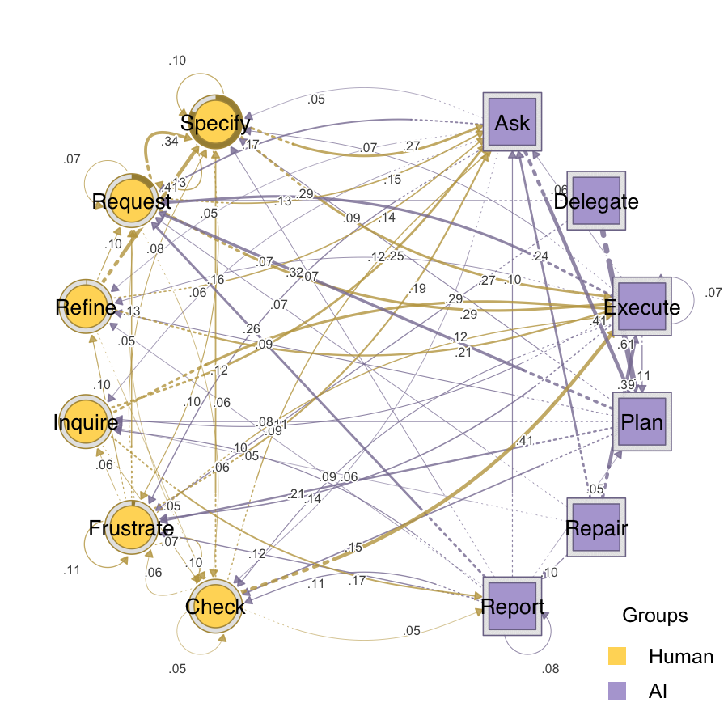

htna is an R package for Heterogeneous Transition Network Analysis (HTNA) that models processes or interactions between a mix two or more actor groups (e.g. Human and AI) as a single network. HTNA builds on the traditions of Transition Network Analysis (TNA) and Co-occurrence Network Analysis (CNA) and maintains the rigor of either method.
The package provides a focused API on top of the Nestimate estimation engine and the cograph rendering engine: build a network over the combined sequence while preserving the actor partition, so downstream bootstrap, permutation, reliability, centrality, and plotting functions treat each actor’s codes as a distinct node group.
Installation
Install the released version of htna from CRAN:
install.packages("htna")Or the development version from GitHub:
# install.packages("devtools")
devtools::install_github("sonsoleslp/htna")Example
Load the example data shipped with htna:
data(human_ai)Build a heterogeneous transition network
build_htna() takes a data frame with a column indicating the actor type, combines the sequences, estimates transition probabilities, and stores the actor partition on the resulting network:
net <- build_htna(human_ai, actor_type = "actor_type")Plot the network
plot_htna() auto-detects the actor groups and renders them with distinct colours:
plot_htna(net, threshold = 0.05, layout = "circular")
Extract path patterns
By default extract_meta_paths() enumerates concrete state-level patterns and tags each row with the type-level template it instantiates:
extract_meta_paths(net)
#> Patterns (state-level) over 429 sequences
#> Rows: 5445 | Lengths: 2, 3, 4 | Gaps: 0
#> schema meta_schema length gap count n_seq support frequency lift
#> Request->Specify Human->Human 2 0 1042 402 0.937 0.055 2.27
#> Ask->Plan AI->AI 2 0 964 346 0.807 0.051 4.87
#> Execute->Request AI->Human 2 0 921 269 0.627 0.049 1.80
#> Request->Execute Human->AI 2 0 904 299 0.697 0.048 1.77
#> Specify->Execute Human->AI 2 0 796 261 0.608 0.042 1.66
#> Specify->Ask Human->AI 2 0 784 292 0.681 0.041 2.20
#> Check->Execute Human->AI 2 0 534 243 0.566 0.028 2.50
#> Plan->Request AI->Human 2 0 503 268 0.625 0.027 1.98
#> Request->Ask Human->AI 2 0 459 222 0.517 0.024 1.21
#> Execute->Frustrate AI->Human 2 0 451 230 0.536 0.024 1.50
#> ... (5435 more)Filter to concrete instances of a type-level template. Schema parts can mix type names, concrete codes, and *:
extract_meta_paths(net, schema = "Human->AI->Human")
#> State-level instances of schema 'Human->AI->Human' over 429 sequences
#> Rows: 163 | Lengths: 3 | Gaps: 0
#> schema meta_schema length gap count n_seq support
#> Request->Execute->Request Human->AI->Human 3 0 401 194 0.452
#> Specify->Execute->Request Human->AI->Human 3 0 176 107 0.249
#> Request->Ask->Request Human->AI->Human 3 0 130 91 0.212
#> Check->Execute->Request Human->AI->Human 3 0 123 96 0.224
#> Specify->Ask->Request Human->AI->Human 3 0 120 84 0.196
#> Specify->Execute->Frustrate Human->AI->Human 3 0 114 88 0.205
#> Request->Execute->Frustrate Human->AI->Human 3 0 106 88 0.205
#> Request->Execute->Inquire Human->AI->Human 3 0 97 76 0.177
#> Specify->Ask->Frustrate Human->AI->Human 3 0 86 70 0.163
#> Inquire->Execute->Request Human->AI->Human 3 0 73 52 0.121
#> frequency lift
#> 0.112 5.00
#> 0.049 2.33
#> 0.036 2.19
#> 0.034 3.67
#> 0.033 2.15
#> 0.032 2.57
#> 0.030 2.24
#> 0.027 4.40
#> 0.024 2.61
#> 0.020 3.31
#> ... (153 more)
extract_meta_paths(net, schema = "Human->Ask->*")
#> State-level instances of schema 'Human->Ask->*' over 429 sequences
#> Rows: 63 | Lengths: 3 | Gaps: 0
#> schema meta_schema length gap count n_seq support
#> Specify->Ask->Plan Human->AI->AI 3 0 340 197 0.459
#> Frustrate->Ask->Plan Human->AI->AI 3 0 214 187 0.436
#> Request->Ask->Plan Human->AI->AI 3 0 139 106 0.247
#> Request->Ask->Request Human->AI->Human 3 0 130 91 0.212
#> Specify->Ask->Request Human->AI->Human 3 0 120 84 0.196
#> Specify->Ask->Frustrate Human->AI->Human 3 0 86 70 0.163
#> Inquire->Ask->Plan Human->AI->AI 3 0 53 45 0.105
#> Refine->Ask->Plan Human->AI->AI 3 0 52 46 0.107
#> Request->Ask->Frustrate Human->AI->Human 3 0 50 44 0.103
#> Specify->Ask->Specify Human->AI->Human 3 0 49 41 0.096
#> frequency lift
#> 0.170 11.65
#> 0.107 11.71
#> 0.070 4.48
#> 0.065 2.19
#> 0.060 2.15
#> 0.043 2.61
#> 0.027 6.22
#> 0.026 6.57
#> 0.025 1.43
#> 0.025 0.93
#> ... (53 more)Pass level = "type" for the type-level meta-path summary:
extract_meta_paths(net, level = "type")
#> Meta-paths (type-level) over 429 sequences
#> Rows: 28 | Lengths: 2, 3, 4 | Gaps: 0
#> schema length gap count n_seq support frequency lift
#> Human->AI 2 0 5970 428 0.998 0.316 1.28
#> AI->Human 2 0 5693 424 0.988 0.301 1.22
#> Human->Human 2 0 4674 422 0.984 0.247 0.79
#> AI->AI 2 0 2581 403 0.939 0.136 0.70
#> Human->AI->Human 3 0 3593 402 0.937 0.194 1.41
#> Human->Human->AI 3 0 3172 422 0.984 0.172 1.25
#> AI->Human->Human 3 0 2828 403 0.939 0.153 1.11
#> AI->Human->AI 3 0 2744 383 0.893 0.148 1.36
#> Human->AI->AI 3 0 2189 403 0.939 0.118 1.09
#> AI->AI->Human 3 0 2100 397 0.925 0.114 1.04
#> ... (18 more)Related research
- López-Pernas, S., Misiejuk, K., Tikka, S., & Saqr, M. (2026). Role Dynamics in Student–AI Collaboration: A Heterogeneous Transition Network Analysis Approach. Innovations in Analytics of Learning Dynamics: Proceedings of the 1st Workshop on Transition Network Analysis (TNA). https://papers.ssrn.com/sol3/papers.cfm?abstract_id=6082190
- López-Pernas, S., Misiejuk, K., & Saqr, M. (2026). How AI ‐generated feedback hinders or helps learning: A heterogeneous TNA study of learning dynamics. Journal of Computer Assisted Learning, 42(4), e70285. https://doi.org/10.1002/jcal.70285
- Rinja, D., Oliveira, E. A., López-Pernas, S., Saqr, M., Specht, M., & Misiejuk, K. (2026). Unpacking vibe coding: Help-seeking processes in student-AI interactions while programming. Proceedings of Artificial Intelligence in Education: 27th International Conference, AIED 2026. https://doi.org/10.48550/arXiv.2604.27134